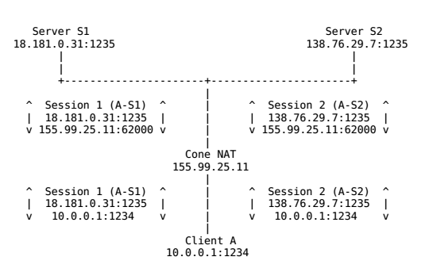
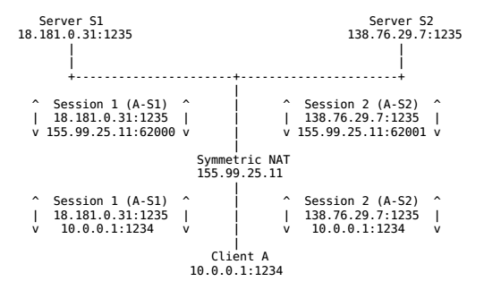
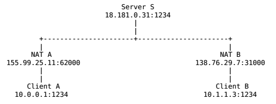
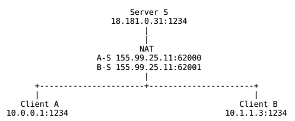

P2P通信原理与实现(C++)
1.简介
当今互联网到处存在着一些中间件(MIddleBoxes)，如NAT和防火墙，导致两个(不在同一内网)中的客户端无法直接通信。这些问题即便是到了IPV6时代也会存在，因为即使不需要NAT，但还有其他中间件如防火墙阻挡了链接的建立。
当今部署的中间件大多都是在C/S架构上设计的，其中相对隐匿的客户机主动向周知的服务端(拥有静态IP地址和DNS名称)发起链接请求。大多数中间件实现了一种非对称的通讯模型，即内网中的主机可以初始化对外的链接，而外网的主机却不能初始化对内网的链接，除非经过中间件管理员特殊配置。在中间件为常见的NAPT的情况下（也是本文主要讨论的），内网中的客户端没有单独的公网IP地址，而是通过NAPT转换，和其他同一内网用户共享一个公网IP。这种内网主机隐藏在中间件后的不可访问性对于一些客户端
软件如浏览器来说并不是一个问题，因为其只需要初始化对外的链接，从某方面来看反而还对隐私保护有好处。
然而在P2P应用中，内网主机（客户端）需要对另外的终端（Peer）直接建立链接，但是发起者和响应者可能在不同的中间件后面，两者都没有公网IP地址。而外部对NAT公网IP和端口主动的链接或数据都会因内网未请求被丢弃掉。本文讨论的就是如何跨越NAT实现内网主机直接通讯的问题。
2.术语
防火墙（Firewall）：
防火墙主要限制内网和公网的通讯，通常丢弃未经许可的数据包。防火墙会检测(但是不修改)试图进入内网数据包的IP地址和TCP/UDP端口信息。
网络地址转换器（NAT）：
NAT不止检查进入数据包的头部，而且对其进行修改，从而实现同一内网中不同主机共用更少的公网IP（通常是一个）。
基本NAT（Basic NAT）：
基本NAT会将内网主机的IP地址映射为一个公网IP，不改变其TCP/UDP端口号。基本NAT通常只有在当NAT有公网IP池的时候才有用。
网络地址-端口转换器（NAPT）：
到目前为止最常见的即为NAPT，其检测并修改出入数据包的IP地址和端口号，从而允许多个内网主机同时共享一个公网IP地址。
锥形NAT（Cone NAT）：
在建立了一对（公网IP，公网端口）和（内网IP，内网端口）二元组的绑定之后，Cone NAT会重用这组绑定用于接下来该应用程序的所有会话（同一内网IP和端口），只要还有一个会话还是激活的。
例如，假设客户端A建立了两个连续的对外会话，从相同的内部端点（10.0.0.1:1234）到两个不同的外部服务端S1和S2。Cone NAT只为两个会话映射了一个公网端点（155.99.25.11:62000），确保客户端端口的“身份”在地址转换的时候保持不变。由于基本NAT和防火墙都不改变数据包的端口号，因此这些类型的中间件也可以看作是退化的Cone NAT。

对称NAT（Symmetric NAT）
对称NAT正好相反，不在所有公网-内网对的会话中维持一个固定的端口绑定。其为每个新的会话开辟一个新的端口。如下图所示：

其中Cone NAT根据NAT如何接收已经建立的（公网IP，公网端口）对的输入数据还可以细分为以下三类：
1) 全锥形NAT（Full Cone NAT）
在一个新会话建立了公网/内网端口绑定之后，全锥形NAT接下来会接受对应公网端口的所有数据，无论是来自哪个（公网）终端。全锥NAT有时候也被称为“混杂”NAT（promiscuous NAT）。
2) 受限锥形NAT（Restricted Cone NAT）
受限锥形NAT只会转发符合某个条件的输入数据包。条件为：外部（源）IP地址匹配内网主机之前发送一个或多个数据包的结点的IP地址。受限NAT通过限制输入数据包为一组“已知的”外部IP地址，有效地精简了防火墙的规则。
3) 端口受限锥形NAT（Port-Restricted Cone NAT）
端口受限锥形NAT也类似，只当外部数据包的IP地址和端口号都匹配内网主机发送过的地址和端口号时才进行转发。端口受限锥形NAT为内部结点提供了和对称NAT相同等级的保护，以隔离未关联的数据。
3. P2P通信
根据客户端的不同，客户端之间进行P2P传输的方法也略有不同，这里介绍了现有的穿越中间件进行P2P通信的几种技术。
3.1 中继（Relaying）
这是最可靠但也是最低效的一种P2P通信实现。其原理是通过一个有公网IP的服务器中间人对两个内网客户端的通信数据进行中继和转发。如下图所示：

客户端A和客户端B不直接通信，而是先都与服务端S建立链接，然后再通过S和对方建立的通路来中继传递的数据。这钟方法的缺陷很明显，当链接的客户端变多之后，会显著增加服务器的负担，完全没体现出P2P的优势。
3.2 逆向链接（Connection reversal）
第二种方法在当两个端点中有一个不存在中间件的时候有效。例如，客户端A在NAT之后而客户端B拥有全局IP地址，如下图：

客户端A内网地址为10.0.0.1，且应用程序正在使用TCP端口1234。A和服务器S建立了一个链接，服务器的IP地址为18.181.0.31，监听1235端口。NAT A给客户端A分配了TCP端口62000，地址为NAT的公网IP地址155.99.25.11，作为客户端A对外当前会话的临时IP和端口。因此S认为客户端A就是155.99.25.11:62000。而B由于有公网地址，所以对S来说B就是138.76.29.7:1234。
当客户端B想要发起一个对客户端A的P2P链接时，要么链接A的外网地址155.99.25.11:62000，要么链接A的内网地址10.0.0.1:1234，然而两种方式链接都会失败。链接10.0.0.1:1234失败自不用说，为什么链接155.99.25.11:62000也会失败呢？来自B的TCP SYN握手请求到达NAT A的时候会被拒绝，因为对NAT A来说只有外出的链接才是允许的。
在直接链接A失败之后，B可以通过S向A中继一个链接请求，从而从A方向“逆向“地建立起A-B之间的点对点链接。
很多当前的P2P系统都实现了这种技术，但其局限性也是很明显的，只有当其中一方有公网IP时链接才能建立。越来越多的情况下，通信的双方都在NAT之后，因此就要用到我们下面介绍的第三种技术了。
3.3 UDP打洞（UDP hole punching）
第三种P2P通信技术，被广泛采用的，名为“P2P打洞“。P2P打洞技术依赖于通常防火墙和cone NAT允许正当的P2P应用程序在中间件中打洞且与对方建立直接链接的特性。以下主要考虑两种常见的场景，以及应用程序如何设计去完美地处理这些情况。第一种场景代表了大多数情况，即两个需要直接链接的客户端处在两个不同的NAT之后；第二种场景是两个客户端在同一个NAT之后，但客户端自己并不需要知道。
3.3.1. 端点在不同的NAT之下
假设客户端A和客户端B的地址都是内网地址，且在不同的NAT后面。A、B上运行的P2P应用程序和服务器S都使用了UDP端口1234，A和B分别初始化了与Server的UDP通信，地址映射如图所示:

现在假设客户端A打算与客户端B直接建立一个UDP通信会话。如果A直接给B的公网地址138.76.29.7:31000发送UDP数据，NAT B将很可能会无视进入的数据（除非是Full Cone NAT），因为源地址和端口与S不匹配，而最初只与S建立过会话。B往A直接发信息也类似。
假设A开始给B的公网地址发送UDP数据的同时，给服务器S发送一个中继请求，要求B开始给A的公网地址发送UDP信息。A往B的输出信息会导致NAT A打开一个A的内网地址与与B的外网地址之间的新通讯会话，B往A亦然。一旦新的UDP会话在两个方向都打开之后，客户端A和客户端B就能直接通讯，而无须再通过引导服务器S了。
UDP打洞技术有许多有用的性质。一旦一个的P2P链接建立，链接的双方都能反过来作为“引导服务器”来帮助其他中间件后的客户端进行打洞，极大减少了服务器的负载。应用程序不需要知道中间件具体是什么（如果有的话），因为以上的过程在没有中间件或者有多个中间件的情况下也一样能建立通信链路。
3.3.2. 端点在相同的NAT之下
现在考虑这样一种情景，两个客户端A和B正好在同一个NAT之后（而且可能他们自己并不知道），因此在同一个内网网段之内。客户端A和服务器S建立了一个UDP会话，NAT为此分配了公网端口62000，B同样和S建立会话，分配到了端口62001，如下图：

假设A和B使用了上节介绍的UDP打洞技术来建立P2P通路，那么会发生什么呢？首先A和B会得到由S观测到的对方的公网IP和端口号，然后给对方的地址发送信息。两个客户端只有在NAT允许内网主机对内网其他主机发起UDP会话的时候才能正常通信，我们把这种情况称之为"回环传输“(lookback translation)，因为从内部到达NAT的数据会被“回送”到内网中而不是转发到外网。例如，当A发送一个UDP数据包给B的公网地址时，数据包最初有源IP地址和端口地址10.0.0.1:1234和目的地址155.99.25.11:62001，NAT收到包后，将其转换为源155.99.25.11:62000（A的公网地址）和目的10.1.1.3:1234，然后再转发给B。即便NAT支持回环传输，这种转换和转发在此情况下也是没必要的，且有可能会增加A与B的对话延时和加重NAT的负担。
对于这个问题，解决方案是很直观的。当A和B最初通过S交换地址信息时，他们应该包含自身的IP地址和端口号（从自己看），同时也包含从服务器看的自己的地址和端口号。然后客户端同时开始从对方已知的两个的地址中同时开始互相发送数据，并使用第一个成功通信的地址作为对方地址。如果两个客户端在同一个NAT后，发送到对方内网地址的数据最有可能先到达，从而可以建立一条不经过NAT的通信链路；如果两个客户端在不同的NAT之后，发送给对方内网地址的数据包根本就到达不了对方，但仍然可以通过公网地址来建立通路。值得一提的是，虽然这些数据包通过某种方式验证，但是在不同NAT的情况下完全有可能会导致A往B发送的信息发送到其他A内网网段中无关的结点上去的。
3.3.3. 固定端口绑定
UDP打洞技术有一个主要的条件：只有当两个NAT都是Cone NAT（或者非NAT的防火墙）时才能工作。因为其维持了一个给定的（内网IP，内网UDP）二元组和（公网IP， 公网UDP）二元组固定的端口绑定，只要该UDP端口还在使用中，就不会变化。如果像对称NAT一样，给每个新会话分配一个新的公网端口，就会导致UDP应用程序无法使用跟外部端点已经打通了的通信链路。由于Cone NAT是当今最广泛使用的，尽管有一小部分的对称NAT是不支持打洞的，UDP打洞技术也还是被广泛采纳应用。
4. 具体实现
如果理解了上面所说的内容，那么代码实现起来倒很简单了 。这里采用C++的异步IO库来实现引导服务器和P2P客户端的简单功能，目的是打通两个客户端的通信链路，使两个不同局域网之间的客户端可以实现直接通信。
4.1 引导服务端设计
引导服务器运行在一个有公网地址的设备上，并且接收指定端口的来自客户的命令（这里是用端口号2333）。
客户端其实可以而且也最好应该与服务器建立TCP链接，但我这里为了图方便，也只采用了UDP的通信方式。服务端监听2333端口的命令，然后执行相应的操作，目前包含的命令有:
login， 客户端登录，使得其记录在服务器traker中，让其他peer可以对其发出链接请求。
logout，客户端登出，使其对peer隐藏。因为服务器不会追踪客户端的登录状态。
list，客户端查看目前的登录用户。
punch <client>， 对指定用户（序号）进行打洞。
help， 查看有哪些可用的命令。
4.2 P2P客户端设计
一般的网络编程，都是客户端比服务端要难，因为要处理与服务器的通信同时还要处理来自用户的事件；对于P2P客户端来说更是如此，因为P2P客户端不止作为客户端，同时也作为对等连接的服务器端。
这里的大体思路是，输入命令传输给服务器之后，接收来自服务器的反馈，并执行相应代码。例如A想要与B建立通信链路，先给服务器发送punch命令以及给B发送数据，服务器接到命令后给B发送punch_requst信息以及A的端点信息，B收到之后向A发送数据打通通路，然后A与B就可以进行P2P通信了。经测试，打通通路后即便把服务器关闭，A与B也能正常通信。
一个UDP打洞的例子见 https://github.com/pannzh/P2P-Over-MiddleBoxes-Demo
# 2016-04-06 更新
关于TCP打洞，有一点需要提的是，因为TCP是基于连接的，所以任何未经连接而发送的数据都会被丢弃，这导致在recv的时候是无法直接从peer端读取数据。
其实这对UDP也一样，如果对UDP的socket进行了connect，其也会忽略连接之外的数据，详见`connect(2)`。
所以，如果我们要进行TCP打洞，通常需要重用本地的endpoint来发起新的TCP连接，这样才能将已经打开的NAT利用起来。具体来说，则是要设置socket的
`SO_REUSEADDR`或`SO_REUSEPORT`属性，根据系统不同，其实现也不尽一致。一般来说，TCP打洞的步骤如下：
- A 发送 SYN 到 B （出口地址，下同），从而创建NAT A的一组映射
- B 发送 SYN 到 A， 创建NAT B的一组映射
- 根据时序不同，两个SYN中有一个会被对方的NAT丢弃，另一个成功通过NAT
- 通过NAT的SYN报文被其中一方收到，即返回SYNACK， 完成握手
- 至此，TCP的打洞成功，获得一个不依赖于服务器的链接